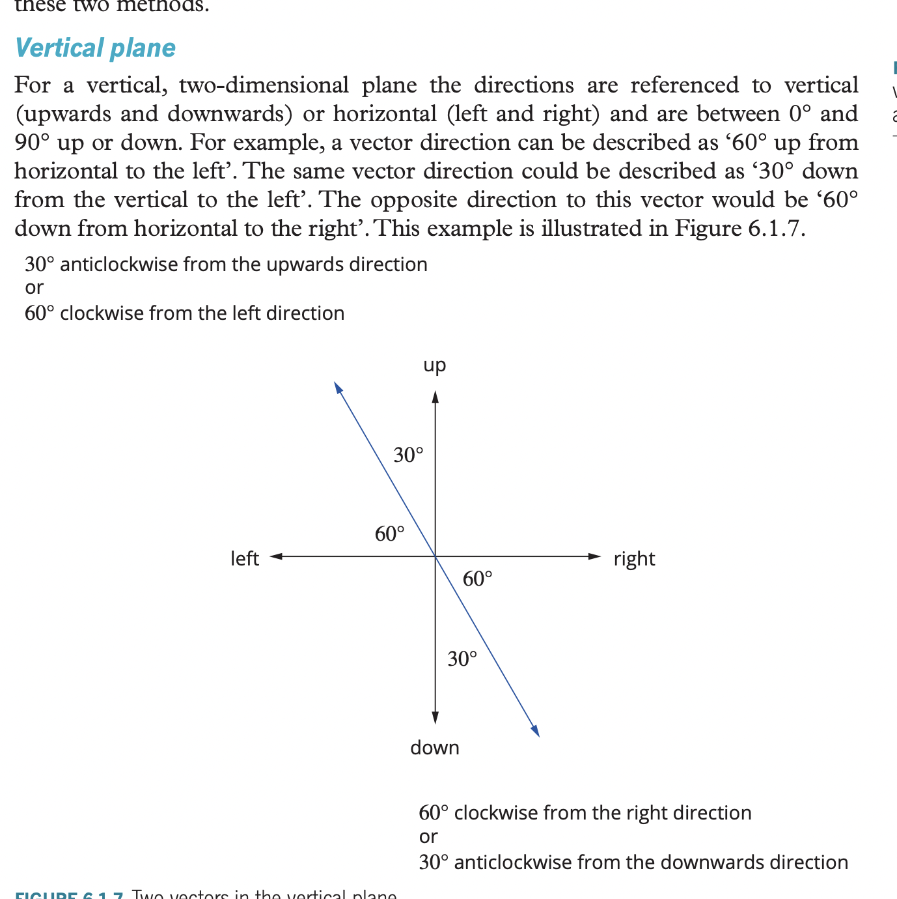
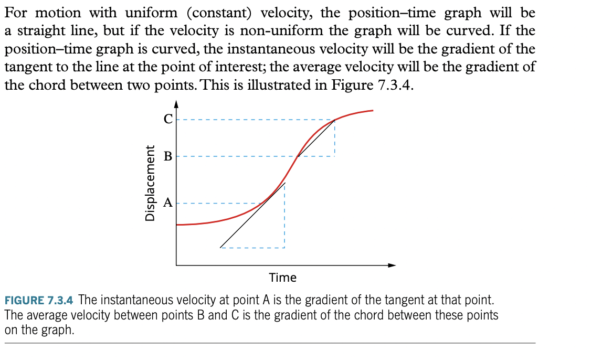
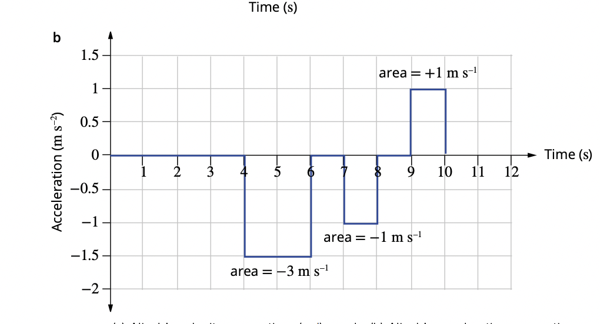

based on revision checklist
useful review chapters (pearson):
- 6.1: scalar vector intro
- 6.2 & 6.3: vector addition practice
- 7.1 & 7.2 & 7.4 & 7.5 & chapter review: equations of motion practice
- 7.3: recognising graphs
- 8.1: conservation of momentum
- 8.2: change in momentum
- 8.3: newtons 1st law
- 8.4: newtons 2nd law
- 8.5: newtons 3rd law
- 8.6: impulse & change in momentum
- 8 review: everything momentum and newtons laws
linear motion
science as a human endeavour
- understand how safety and other road users has been increased through applications of newton’s laws and conservation of momentum through helmets, seatbelts, crumple zones, airbags, safety barriers.
- this is a brief summary, and is missing a lot of detail to achieve a high mark. please revisit later.
- seatbelt designed to lock during severe deceleration.
- as the human has the same motion applied as the car they are moving in,
- according to newtons first law, objections in motion stay in motion: when the car stops the human keeps moving forward, and is likely to collide or be flung out.
- airbag minimises injuries
- if vehicle impacts object at 18-20 km/h or more, airbags inflate.
- since the body will continue to be in motion, the airbags will help decelerate the body.
- crumple zones + helmets
- similar principles to airbags
- helmets have like a crushable foam.
- crumple zones extend the time for a crash to take place
- traffic safety barriers doesn’t entirely slow deceleration, but is good because it can enact an opposing force on the object, and protects people from places such as bridges.
science understanding
scalar vs vector quantities
- describe difference between scalar and vector quantities
-
scalars
- values which only require the magnitude (size) and the units.
- e.g. time is a scalar value, because it does not tell you anything about the position or direction.
-
vectors
- values with both magnitude (size) and direction (units ofc as well)
- examples of vectors include:
- position
- displacement
- velocity
- acceleration
- force
- momentum
- because they have direction and magnitude
- u can represent vectors as arrows
- since arrows have direction and magnitude (length of arrow indicates magnitude and obviously direction of arrow indicates direction)
- end of arrow is called tail, the other end is called head.
- vector arrows in one direction is like <-> or up arrow to down arrow lmao
- sign convention - make sure for one direction arrows (and 2 direction) say like the direction of the arrows too.
-
vectors in two directions
- horizontal plane (north east south west)
- you can use true bearing or you can use quadrant bearing
- iirc quadrant bearing is recommended for physics
- basically N/SdegreesE/W
- pretty self explanatory stuff
- in words you write like from north x degrees towards the east or whatever direction lmao
- vertical plane (up down left right)
-  i dont really want to describe and say all this shit but u get the idea
- horizontal plane (north east south west)
- yeah thats basically it do the review chapter !!!
vector addition
- how to add and subtracts vectors in two dimensions
- sometimes more than one vector can act upon an object (no way wtf?!?!?!)
- so you need to add vectors
- and find resultant of the two vectors.
- vectors 3d also exists but not tested ofc
- same dimension vectors are collinear (parallel)
- so just simplify to + and - and add them together normally
- graphical method
- use head to tail method
- join up the tail of 1 vector to the head of another.
-
two dimensions
- head to tail method and parallelogram (not going to be bothered with parallelogram cos basically same method for same results)
- for head to tail like add the head and tail together.
- get the angle of the shit and use trig (cosine and sine rule)
- and calculate the hypotenuse of the angles.
- draw it geometrically if you need help wit it
- subtracting vectors you just get the opposite vector
- e.g. -30metres west is just 30metres east.
applications of suvat, and the equations
please refer to my useful notes on displacement, speed and velocity and acceleration
- equations you should know applications for: (in the formula sheet)
representations, graphs, and equations of motion
position time graphs
- basically y-value is position, and x-value is time.
- the gradient of the position-time graph is velocity.
- therefore, if the graph is like linear, then velocity is constant.
- furthermore, if the graph is quadratic-like, then velocity is changing.
- to calculate the non-uniform velocity, the gradient will be the tangent to the point of interest (photo attached cos idk how to explain it in words!!)
velocity time graphs
- shows how velocity of an object changes over time.
- area of a velocity graph is the displacement.
- gradient of a velocity time graph is the acceleration
- to calculate average acceleration, use
- if gradient is curved and non-uniform (like position time), then acceleration non-linear. if it is uniform and linear, then acceleration is constant.
acceleration time graphs
 illustrate the jumps with dotted lines i think is what is recommended
uniform acceleration
- when no grah what to do?
- simple: use more precise and faster methods involving constant or uniform acceleration
- use
- this can be rearranged to get
- average velocity is
- since v average is half of the final - initial velocities
- (whoa an equation of motion, derived from simple formulas)
- we know displacement is the area of a velocity time graph, which can be represented as
- we also know that
- such
vertical motion and gravity
- acceleration is 9.80m
- substitute for equations of motion.
- that’s it.
newton’s three laws of motion
force preface
force can be thought of as push or pull
- forces that directly act upon a body are called contact forces, because the force is only experienced when contact is maintained.
- forces acted upon the body at a distance are non-contact forces.
- a force is measured in newtons
1. an object in motion stays in motion (maintain constant velocity) unless an unbalanced, external force acts upon it (the object).
- the term maintains a constant velocity implies that, if the object is moving, then it will continue to move with a velocity that has the same magnitude and direction. e.g. a car moving 12m/s south after a set amount of time will still be moving at 12m/s (this is also consistent with zero velocity)
- unless implies an otherwise for the non-continuation of a constant velocity, and is shown through an unbalanced acting force.
- terminal velocity is the state of time when the speed a skydiver falls is equal to the air resistance, such the skydiver is unable to gain acceleration without changing anything such as mass or shape.
-
inertia
- the law is expanded upon with inertia.
- inertia is considered to be the resistance to a change in motion of an object.
- as the mass of an object increases, inertia increases.
- inertia causes:
- harder to start moving a stationery object.
- harder to stop moving a object with a velocity.
- harder to change the direction of motion.
- this can be demonstrated in real life through shopping carts.
2. force = mass x acceleration
- connects mass, acceleration and forces
- newtons 2nd law can be edited to fit with change in momentum
- since
3. every force has an equal and opposing force.
- when hammer hits nail, the nail and the hammer both experience forces.
- the force experienced by hammer is relative to the force experienced by the nail.
- this observation follows newton’s third law. stating every force has an equal and opposing force.
- in a collision of a large bus and a small car, the force both experiences are the same.
- but due to the difference in mass, one has a higher acceleration, whilst the other has a lower acceleration.
- this is true for gravity as well - called the normal force.
- abbreviated as or
free body diagram
applying the relationship F=ma and Fweight=mg using free body diagrams.
momentum
- p=mv where p is momentum (kgm/s), m is mass of object (kg), v is velocity of object (m/s)
conservation of momentum (1d collisions)
- or expressed as
- blah blah blah yk what each variable means.
- if the objects colliding joins together then its
- if the objects explode and break apart into two objects then it is
change in momentum // impulse
- (impulse is change in momentum)
- area of force time graph = momentum change = impulse (since )
energy
work
- work is a measurement of how much energy to transfers forces
- measured in joules (), since work is = Fs = ma x s = m x m/s^2 x s
- since W=Fs, 1J = 1N x 1m = 1Nm
- 1J = 1N x 1m = 1kgm/s^2 x 1m = 1kgm^2/s^2